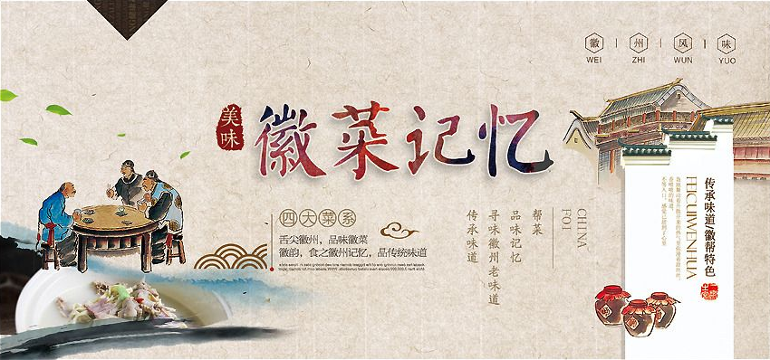

欢迎光临老徽州徽菜馆
大美黄山，梦圆徽州
徽文化
中国三大地域文化之一。
主要内容有：徽州土地制度、徽商、徽州宗族、徽州历史名人、徽州教育、徽州科技、新安理学、新安医学、程大位珠算法、徽派朴学、徽州戏曲、新安画派、徽派篆刻、徽派版画、徽州工艺、徽州刻书、徽州文献、徽州文书、徽派建筑、徽州村落、徽州民俗、徽州方言、徽菜、徽州宗教、徽州地理等。
徽菜
徽菜，是中国八大菜系之一。
徽菜起源于秦汉，兴于唐宋，盛于明清，在清朝中、末期达到了鼎盛，徽菜是徽州的地方特色，其独特的地理人文环境赋予徽菜独有的味道，由于明清徽商的崛起，这种地方风味逐渐进入市肆，流传于苏、浙、赣、闽、沪、鄂以至长江中、下游区域，具有广泛的影响，明清时期一度居于八大菜系之首。